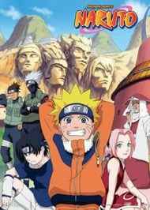
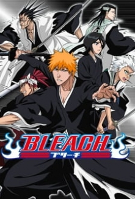
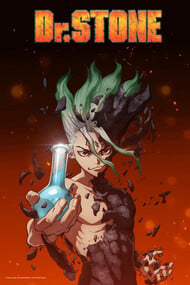

Naruto
Naruto, içine hapsedilmiş kyubii (9 kuyruklu efsanevi tilki) yüzünden Konoha halkı tarafından yaratık olarak görülüp kenara itilmiş bir çocuktur. Naruto'nun bütün hedefi Ninja akademisini bitirip, Hokage olmaktır. Akademi'nin ilk bölümünü bitirip genin olarak mezun olan Naruto, arkadaşları Sakura ve Sasuke ile chunin olabilmek için yeni eğitimlerine başlarlar. Yaramaz ve bir o kadar heyecanlı bir kişiliğe sahip olan Naruto, içindeki kyuubinin gücünü yavaş yavaş öğrenecektir.
Bleach
Kurosaki Ichigo 15 yaşında normal bir öğrencidir, ancak ölülerle iletişim kurma becerisine sahiptir. Ichigo'nun babası ve kardeşleri aileye ait bir klinik işletmektedirler. Birgün, shinigami (ölüm tanrısı) olan Kuchiki Rukia, Ichigo'nun odasına camdan girer ve Ichigo'nun onu görebildiğine çok şaşırır. O anın kargaşasında çevreye gelen hollow (kötü ruh) ile dövüşürlerken, Rukia güçlerini Ichigo'ya geçirir. Shinigami güçlerini alan Ichigo, Rukia ile beraber hollow'ları yok etmeye başlar.
Shingeki no Kyojin

Yüzyıllar evvel insanoğlu devler tarafından yok olmanın eşiğine getirilmiştir. Devler tıpkı anlatılagelmiş hikayelerdeki gibi, uzun, zekadan yoksun görünen, insanları yiyen ve de en kötüsü bunu beslenmek için değil zevk için yapan varlıklardır. Az sayıdaki insan, en uzun devlerden bile yüksek duvarlar inşa ederek çevreledikleri bir şehrin koruması altında hayatta kalmıştır. Şu anki zaman diliminde ise 100 yılı aşkın bir süredir tek bir dev dahi şehre ayak basmamıştır. Henüz erginliğe erişmemiş bir çocuk olan Eren ile sütkardeşi Mikasa, bir anda ortaya çıkan inanılmaz büyük bir devin saldırısı sonucu şehrin surlarının yıkılmasına tanık olurlar. Nispeten daha küçük olan devler surlarda açılan gedikten şehre akın ederler ve bu iki çocuk dehşet içerisinde annelerinin bir dev tarafından canlı canlı yenilişini izlerler. Eren bütün devleri öldürüp insanlığın intikamını alacağına yemin eder.
Kimetsu no Yaiba

Eski çağlardan beri ormanda insan yiyen iblisler olduğu söylentisi gezmektedir. Bundan ötürü yerli halk gece vakti dışarıya çıkmayı hiç göze alamıyordu. Aynı zamanda efsaneye göre geceleri bu kana susamış iblisleri avlayan bir iblis avcısı vardır. Genç Tanjirou için bu söylentiler yakında acı gerçeklere dönüşecekti. Babasının ölümünden beri Tanjirou ailesine bakma görevini üstlenmişti. Hayatları trajedilerle karşılaşmış olsa bile mutluluğu bulmuşlardı. Ama bu mutluluk Tanjirou ailesini katledilmiş buluncaya kadardı ve hayatta kalan tek üyesi olan kız kardeşi Nezuko, bir iblise dönüşmüştü. Şaşırtıcı bir şekilde Nezuko hala insan duygularını ve düşüncelerini taşıyordu. Böylelikle Tanjirou'nun iblislerle dövüşme ve kız kardeşini tekrar insana dönüştürme görevi başladı.
Dr. Stone
Kaçınılmaz bir günde, tüm insanlık kör edici bir ışık parlamasıyla donakalmıştı. Birkaç bin yıl sonra, Liseli Taiju uyanır ve kendini heykellerin dünyasında kaybolmuş şekilde bulur. Ama, yanlız değildir! Onun Bilime aşık arkadaşı Senku kalkmış ve bir kaç aydır çalışıyordu ve bilimin gücüyle medeniyeti yeniden inşa etmek için aklında bir fikri vardı.
Tokyo Ghoul

Tokyo'da insanları yiyen gizemli hortlakların neden olduğu gerilim dolu bir korku hikayesi başlar. Bu gizemli hortlakların verdiği korku tüm insanları etkisi altına almıştır. Sıradan bir üniversite öğrencisi olan Kaneki, tıpkı kendisi gibi bir kitap kurdu olan Rize'yle Café Anteiku'da karşılaşır. Kaneki, kaderinin bir gecede değişeceğinin farkında değildir.